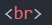
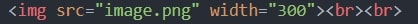
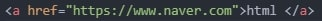

html 의 기초
줄바꿈에 대하여

: enter와 같이 줄바꿈을 해주는 태그
문단 만들기

위 아래쪽의 간격을 조정할 수 있음
이미지 넣기에 대하여
이미지 검색은 https://unsplash.com/를 참고한다
저작권이 없는 사진들을 무료로 다운받을 수 있다.


h1~h6에 대하여

h1
h2
h3
h4
h5
h6
줄바꿈이 됨 글짜크기가 달라짐.
제목을 나타내는 tag임
텍스트 변환
강조

밑줄
링크생성

html
위 링크 클릭시 지정된 사이트(네이버)로 연결

html
위 링크 클릭시 새 탭을 열어 지정된 사이트(네이버)로 연결
목록작성
- ul

- 서론
- 본론
- 결론
- ol
- 서론
- 본론
- 결론
상단탭의 이름 변경
 -->
-->
동영상추가 : iframe
삽입할 동영상 선택 후 공유선택 → 퍼가기

frameborder=0은 동영상 테두리를 깔끔하게 없애줌

?start=131 : 131초부터 재생시작
댓글란 만들기
livere에 접속하여 코드를 다운받음
실시간 채팅기능 만들기
tawk에 접속하여 코드를 다운받음